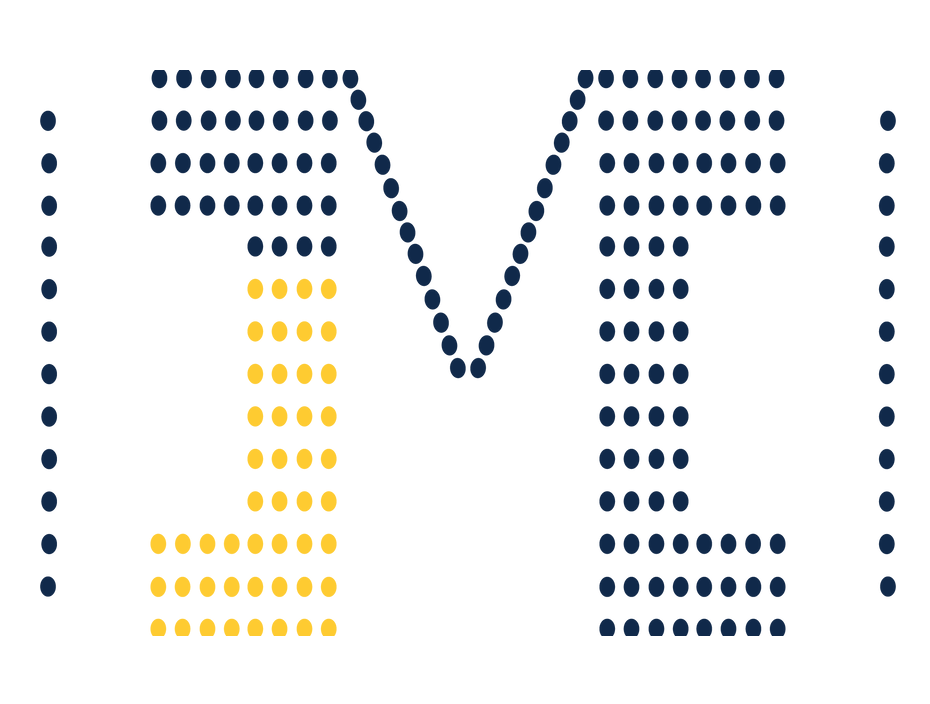
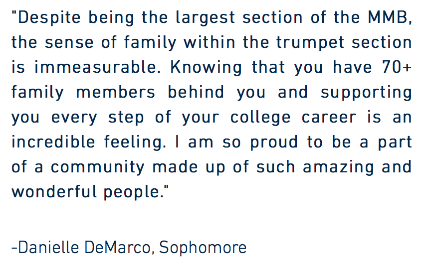

Work Environment: Group of Two
Role: Project Manager
Summary
For three years during college I served on the Marketing and Information staff for the Michigan athletic bands, which is a student staff that manages the bands' social media and online presences. This included managing the online content for the Michigan Marching Band (MMB), which is comprised of 12 different instrumental sections. In the Spring of 2017, I pointed out that only a few sections had their own website, but even those were extremely outdated. The Development Officer for the band entrusted me with overseeing the creation of new section websites to use for recruitment. I worked with a student graphic designer on the staff throughout the summer and fall of 2017 to design and publish the new websites. Though the sites have changed slightly since I helped create them, they are still accessible from the MMB's website.
Background Information
Each of the marching band's 12 sections is comprised of people who perform with an instrument or auxiliary equipment, such as drumline, twirlers, or trumpets. High School students interested in auditioning for the MMB may want to learn more about the particular section they want to join. Before this project, this is what displayed when a user clicked the "Sections" tab of the MMB website:
This is concerning because only a few of the sections have links to a "Section Homepage". Furthermore, the available websites are managed voluntarily by the sections, so branding is inconsistent and content could become outdated. Websites with outdated information on them are no longer useful for prospective students. A screenshot of one of these original homepages is shown below:
Getting Started
First, I asked the band members for feedback on what they thought would be useful on a section website. After discussing the suggested options with the graphic designer, we picked what would be feasible to implement. Given the large amount of websites we needed to create and the limited amount of time we had, we decided to use Wix to create the websites. Wix is a free website-creation tool with a relatively small learning curve, but that offers a lot of freedom in design and functionality.
Design
To make sure the section websites had a uniform design, I decided it would be best to create a website template that we could then replicate and fill in with each section's specific information. I had the graphic designer create three templates with different visual designs, which I then presented to the band directors to see which format they would like the sites to follow. Once we decided on a design and made sure it followed all of the MMB's branding requirements, we moved on to creating the different sites.
Implemented Features
Next, I reached out to the student leaders of each section to gather photos, quotes, and other information to personalize each website. The following features were implemented in the websites:
Pregame Block M Graphic
Shows where each section is located in the famous "Block M" Pregame formation
Section Member Quotes
Highlights quotes from current membres to show what is special about each particular section.

Final Thoughts
This was my first time experiencing the stresses and opportunities of working at a large company. I struggled and made mistakes, but the challenges helped me to grow both intellectually and professionally. Seeing how happy my redesigned tool made GM employees was the most rewarding part of the experience.